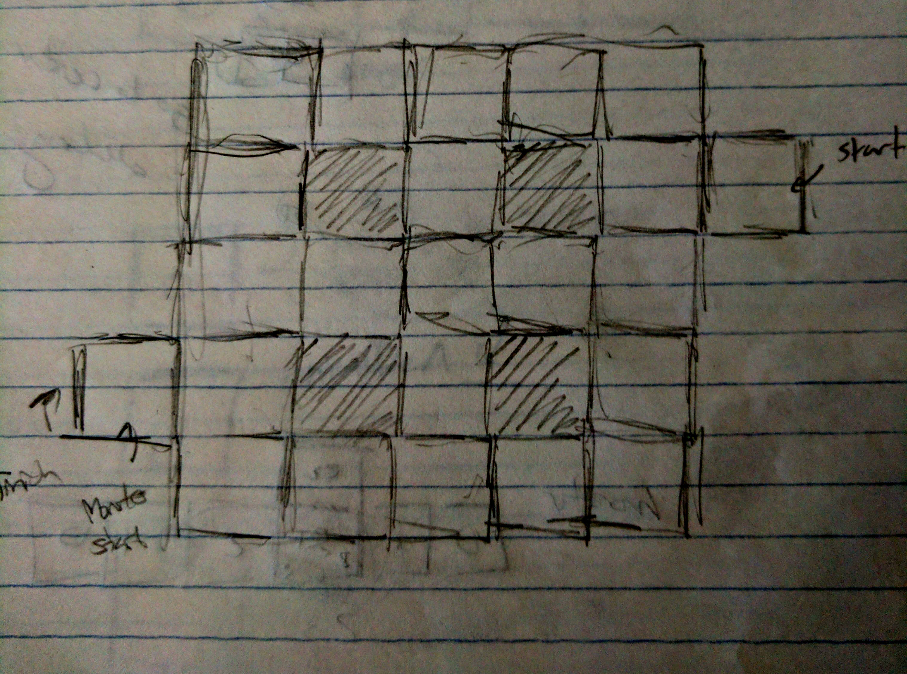

The work on this project was defined by tight deadlines and technical problems. We were introduced to a sound middleware called WWise and had to do our best to integrate it with Unity. Although there was some support, it didn't always play nicely, especially with Git in the equation as well.
This project was for a Sound Design for Video Games course at UCI. As our final project, we had to create a game with sound as a central element. The original concept for the game that I had was a system of rooms, each with 4 doors that you could put your ear to and listen to what was behind them, and then pass through them when they opened on interval.
One key feature we decided to add was having different kinds of rooms. We had a drippy
wet room, a fleshy room, a machine room and a ghost room. What this meant were these were
different aural environments, which mean this was something you could listen for when you
were next to a door. Having different rooms also helped serve to have points of reference for
the players traversing the game. It also introduced a source of tension when you are on the other
side, listening to a new room for the first time. Is this a threat or not? However, this combined
with the sound of the monster proliferating through 2-3 rooms or so, as well as the exit, meant
that it was difficult to wrap your head around the whole concept. I illustrated how exactly
these sounds should interact with a series of case scenarios, not only to help clarify for my team,
but to organize and verify for myself, that what I had thought was a working system.
In this illustration, the scenario is drawn above, and then the 5 different scenarios representing
all possible player positions are shown. Then next to them, I figured out with my team what the
player should be hearing in each of those scenarios. We then implemented these rules on the game.
This was a part of the design that went wrong. I created a prototype map for the project
to begin with, but we never transitioned away from it. Sounds proliferate by means of Taxi Cab
Distance; that is, they travel one room at a time, restricted to going up, down, left and right.
The map should have been designed around this mechanic. Instead, the map that ended up in the final
build seemed awkward, at best.
In a game where we had decided to give the player very little help, we found that on this map
they were left with very few options. We continued to iterate over and over polishing and fixing
various things. But we never went back on making a new map (Procedural generation was talked about,
but for a short term project like ours, it was out of scope).
In fact, I had made several other designs quite early in the process, but we were so enveloped in
just trying to make the game work.

Looking back, we should've at least tried these other map designs, and more. To be clear, the responsibility was on me,
but as with working on short deadlines, one often focuses on just getting the thing to work. The third map in particular
(the one on the right, shown above), I feel would have been interesting and perhaps superior. I created it thinking
that "simple is best." And then looked at it and thought, maybe that's what too simple though. However, with
so little information given to the player, there was no need to make the map any more complex than necessary.
This one seems to feature everything we'd have wanted in the game; straightforward paths, locations for easily
placable reference points, and opportunity to both meet and escape from the monster plenty.
We as a team had decided to go with the hands-off approach; let the player come in, experience new
sounds and mechanics, fail and die a few times, and then find their way to the exit and win. However,
feedback we got towards the end was that players would often start off wondering where to go and what to do.
Perhaps this was simply a byproduct of the intended design, however player feedback can not simply be ignored.
Even after all is said and done, I have to ask myself: what could I have done better? In fact, I had some
inklings of ideas as to what to try to remedy this. I had thought about leaving directional visual clues
in some rooms, especially when the player was heading towards a dead-end. While we decided against a mini-map,
many players wondered if at least, there should be a sound leading them towards the goal for themselves to follow.
Although we had a light version of this (without global distance) in the game, technical issues stopped
it from working properly. That left a lot to be desired when wishing for help in the player's shoes. Being
in the player's shoes is what we failed to do, we were testing the functionality so often we were already familiar
with the map and had lost sight of the player's experience.
What little help we gave didn't work that well:
The image on the left is the starting room, with the arrow pointing towards the only door that would lead to a room.
Even with what I thought was fairly clear, players would start in that room often trying other doors anyway.
The image on the right is a "ghost room." These are placed in dead ends and have a pretty spooky ambience, but
the visual feedback is not quite there yet. At the very least, I should've placed a few more bloodied messages on the
ground, the visual style would've stayed consistent and if the player saw something familiar again they'd
be able to pick up a pattern.
Although when I got the idea for this game I was excited and thinking about it every night before I slept, we were unable to execute and implement in such a way that brought out the maximum potential from the idea. Between the tight deadlines and the technical problems however, I'm satisfied that we were able to get something fairly functionally complete. It's an idea I wouldn't mind revisiting in the future to see if I could make something even cooler.